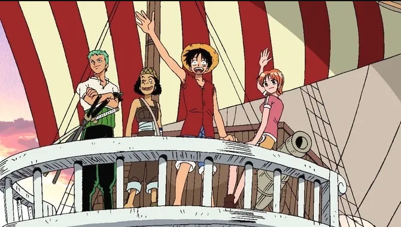

One Piece és un anime produït per Toei Animation i transmès per Fuji Television que adapta el manga One Piece. El primer episodi va sortir a l'aire al Japó el 20 d'octubre del 1999. La sèrie continua amb més de mil episodis, quinze pel·lícules, dotze especials de televisió i quatre OVAs.

L'anime de Toei no és l'única (ni la primera) adaptació animada de One Piece, sent precedida per l'OVA de 1998 de Production IG: Et derrotaré! Pirata Ganzack.
One Piece és una de les sèries més populars del món, actualment, aquest anime pot ser vist en una gran quantitat de llocs de transmissió, inclosos Crunchyroll, Netflix, Prime Video, Hulu, Vudu, Pluto Tv, Apple TV, Sling TV i HBO+.
🏴☠️#OnePiece en català torna a casa!
— SX3 (@SomSX3) June 16, 2023
💥 Al juliol podràs veure la primera saga i a l’agost, la segona; a la tele i a les plataformes digitals de l’X3. #OnePieceX3 #AnimeX3 #SomX3 #sèriesencatalà #estiktokat pic.twitter.com/iuZK3UJmum
Gol D. Roger era conegut com el "Rei dels Pirates", el pirata més fort i infame, que va navegar per tot el Grand Line. La seva captura i execució per part del Govern Mundial va provocar un gran canvi mundial. Les seves darreres paraules van revelar l'existència del tresor més gran del món, el One Piece. Això va provocar l'inici de la Gran Era Pirata, els homes que somiaven trobar el llegendari tresor, prometedor d'una quantitat il·limitada de riquesa i fama, i obtenir el títol més cobejat per a la persona que el trobi, el de Rei dels Pirates.
Anys més tard, Monkey D. Luffy, un nen de 7 anys, somia ser un pirata, i per això, decideix demanar-li a Shanks unir-se a la seva tripulació, cosa que Shanks rebutja. En Ruffy, per error, es menja la fruita Gomu Gomu, una fruita del diable que li va permetre convertir-se en un home de goma, però traient-li la capacitat de poder nedar per sempre. Després d'un incident amb uns bandits, és rescatat per Shanks, qui, lamentablement, va perdre el braç esquerre.
Més tard, Shanks i la seva tripulació se n'han d'anar, i abans de la seva partida, en Ruffy li promet que algun dia serà el "Rei dels Pirates". Per segellar aquesta promesa, Shanks li dóna el seu barret de palla, dient-li que quan sigui un gran pirata, li retorni.
Deu anys després, en Ruffy anirà a l'aventura, reclutant diferents companys per a la seva tripulació. Més tard, juntament amb Zoro, Nami, Usopp i Sanji, entraran al Grand Line, on viuran aventures, coneixeran més personatges que s'uniran a la tripulació (Chopper, Nico Robin, Franky, Brook, Jinbe), s'enfrontaran a nombrosos enemics i organitzacions poderoses, com el Govern Mundial, la Marina, pirates, etc., perquè així, en Ruffy compleixi el seu somni de ser el "Rei dels Pirates".
L'anime One Piece és, en comparació amb altres animes de llarga durada, molt fidel al material original, adaptant gairebé tot el contingut de la història del manga amb un mínim de contradicció deliberada. Encara que ha alterat i reorganitzat (i en poques ocasions, eliminat) diversos elements del manga, normalment ho fa per motius de temps o de classificació de contingut; quan aquests canvis contradiuen el material establert posteriorment pel manga, s'ignoren per defecte, i el manga té prioritat. A causa de la llarga durada de la sèrie, hi ha hagut episodis de recapitulació sovint comptats en flashbacks.
En allò que potser és la seva desviació més gran del manga, Toei ha produït una quantitat considerable de material original de la història (popularment anomenat "relleno" pels fans) utilitzant l'ambientació i els personatges bàsics del manga. Aquests poden ser un sol episodi o arcs de diversos episodis; la majoria estan escrits per reconciliar-se amb la continuïtat basada en el manga, però no hi tenen un impacte tangible (i de fet gairebé mai s'hi fa referència ni tan sols en un altre material original de l'anime).